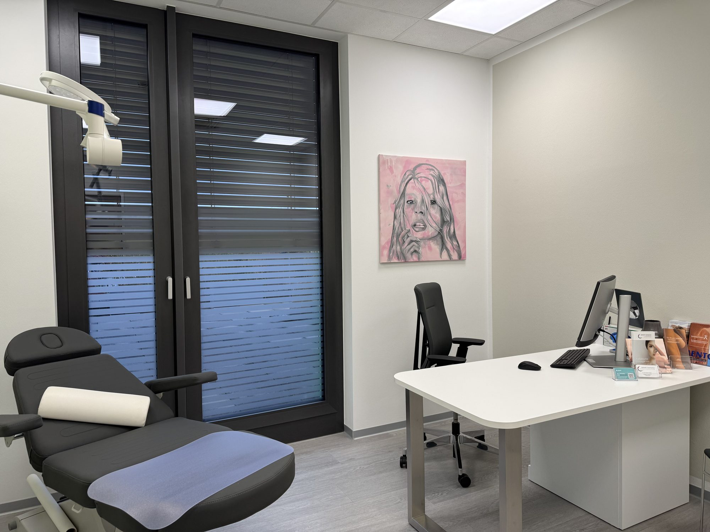
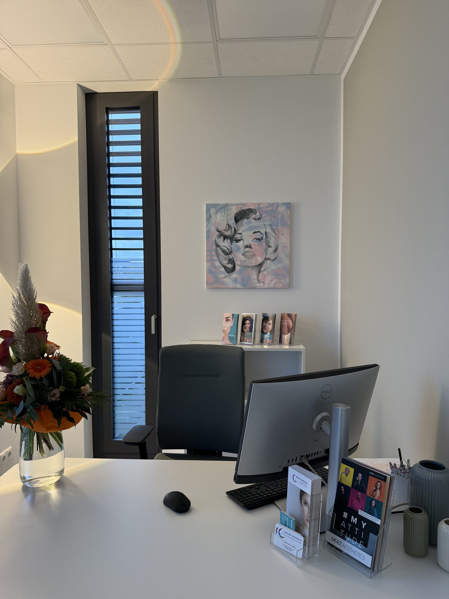
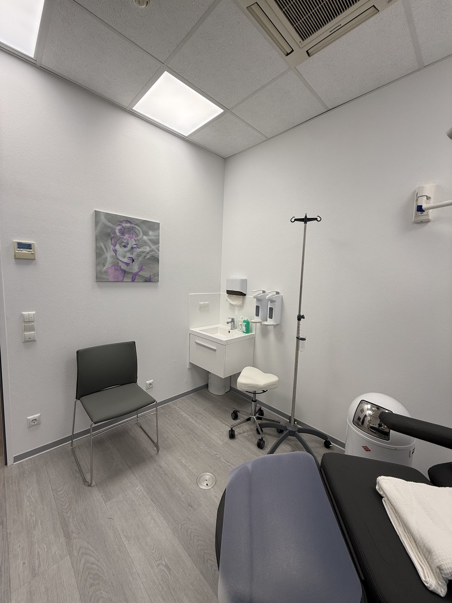

Ausstellung · Bad Soden am Taunus
Braxart bei Ästhetik MainTaunus
Vier Pop-Art-Porträts hängen dauerhaft in einer Privatpraxis für plastische Chirurgie – und sind dort erwerbbar.
- Werke
- 4 Porträts, je 60 × 60 cm
- Zeitraum
- Dauerausstellung
- Ort
- Bad Soden am Taunus
Rundgang
Vier Porträts, 60 × 60 cm.
Montana-Spray, Posca-Marker auf LeinwandIn der Praxis erwerbbar
Details ›
Montana-Spray, Posca-Marker auf LeinwandIn der Praxis erwerbbar
Details ›
Montana-Spray, Posca-Marker auf LeinwandIn der Praxis erwerbbar
Details ›
Lieber im Original sehen?
Die Bilder hängen dauerhaft in der Praxis in Bad Soden. Wer eins kaufen möchte, fragt am besten direkt dort.
Infos zum BesuchSo hängen die Bilder in der Praxis.
Fotos und kurze Clips aus den Behandlungs- und Beratungsräumen in Bad Soden.



Pop Art im Behandlungszimmer.
Die Idee kam von einer Freundin unserer Familie: Sie führt mit Ästhetik MainTaunus eine Privatpraxis für plastische Chirurgie in Bad Soden am Taunus – und fand, dass meine Porträts genau dorthin passen. Schönheit, Ausdruck, Gesichter: Das Thema der Praxis und meiner Bilder liegt gar nicht so weit auseinander.
Seitdem hängen vier meiner 60 × 60-Leinwände in den Räumen der Praxis: Marilyn Monroe, Kate Moss, Audrey Hepburn und Madelyn Cline. Alle vier sind mit Montana-Sprühdosen und Posca-Markern gemalt – zarte Pastelltöne statt knalliger Farben, passend zu den hellen Räumen.
Die Bilder sind eine Dauerleihgabe und können vor Ort gekauft werden. Die Praxis vermittelt den Kontakt, und für jedes verkaufte Bild male ich ein neues für die Wand. So verändert sich die Ausstellung mit der Zeit.
- Ort
- Ästhetik MainTaunus
Privatpraxis für plastische Chirurgie
Bad Soden am Taunus
Website der Praxis - Zeitraum
- Dauerausstellung
- Werke
- 4 Porträts, je 60 × 60 cm
- Kaufen
- Am besten direkt in der Praxis anfragen – oder bei mir